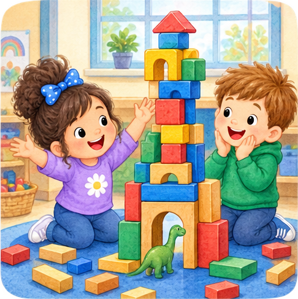
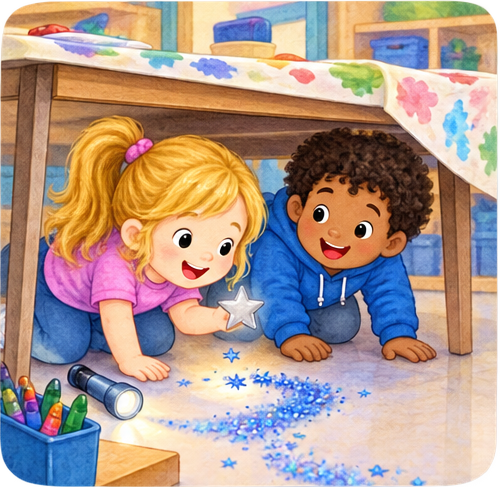
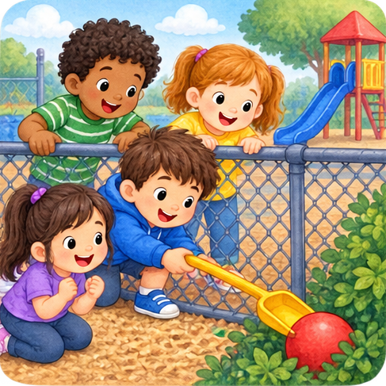
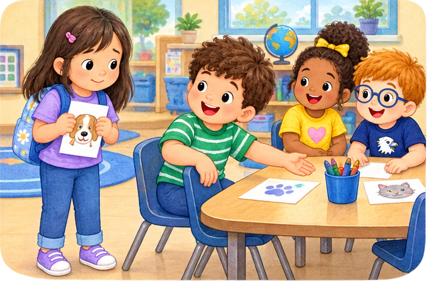
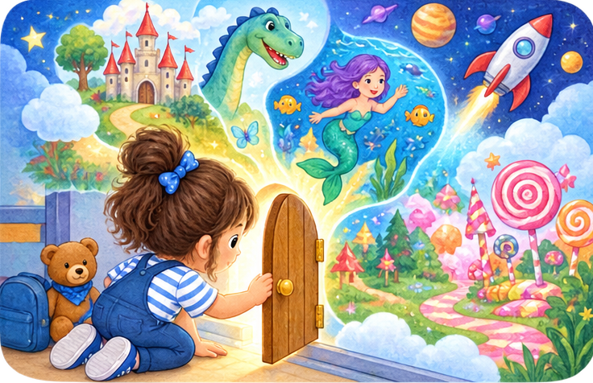

Monday
The Block Tower That Wouldn’t Stay Up
Listen carefully and make the pictures in your mind while your teacher tells the story.

Listen carefully and make the pictures in your mind while your teacher tells the story.

Listen for the clues. What can you picture happening next?

Make the playground scene in your mind as the children solve a tricky problem.

Listen and imagine the people, the table, and what happens when someone makes room.
